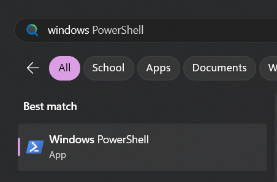
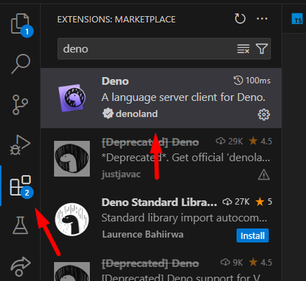

Instalace ReMapper
Zde je návod, co musíte udělat jednorázově na vašem systému!
Instalace Deno
ReMapper vyžaduje Deno pro svojí funkčnost. Deno je runtime, takže kompiluje a spouští TypeScript kód.
Otevřete Windows Powershell terminál:
Poté vložte následující příkaz do terminálu a nechte ho nainstalovat:
irm https://deno.land/install.ps1 | iexVSCode Plugin
Pokud používáte VSCode, budete potřebovat také nainstalovat rozšíření. Přejděte do záložky rozšíření a nainstalujte Deno.
Nastavení Výstupního Playlistu
Při spouštění skriptů budete získávat "výstupní" kopii vaší mapy. Budete potřebovat, aby se tyto mapy objevily v playlistu/složce, kterou můžete hrát ve hře.
- Najděte složku
Beat Saber_Data/CustomWIPLevelsa vytvořte v ní složkuOutputMaps. - Najděte soubor
UserData/SongCore/folders.xmla otevřete ho v textovém editoru. - Vložte následující kód:
<folders>
<folder>
<Name>Output Maps</Name>
<Path>vaše cesta zde</Path>
<Pack>2</Pack>
<WIP>True</WIP>
</folder>
</folders>Musíte nahradit "vaše cesta zde" cestou ke složce OutputMaps, kterou jste vytvořili.
⚠️ Playlist se nezobrazí, pokud neobsahuje žádné mapy! Zkuste do něj vložit mapu pro otestování funkčnosti.
Další Nástroje
Blender Exporter
Pokud plánujete importovat primitivní objekty z Blender scén do mapy, budete potřebovat ReMapper Blender Exporter. Instrukce k instalaci tohoto pluginu najdete zde.
Auto Script Refresh
Pokud chcete, aby se váš skript automaticky aktualizoval při uložení nebo když se změní klíčové soubory (VELMI DOPORUČENO!), budete chtít nainstalovat Denon.
Pro instalaci spusťte tento příkaz v Powershell okně:
deno install -qAf --unstable --global https://deno.land/x/denon/denon.tsPokud dostanete chybu typu "<cesta> cannot be loaded because running scripts is disabled on this system", zkuste spustit tento příkaz:
Set-ExecutionPolicy RemoteSigned -Scope CurrentUserA poté znovu spusťte instalační příkaz.